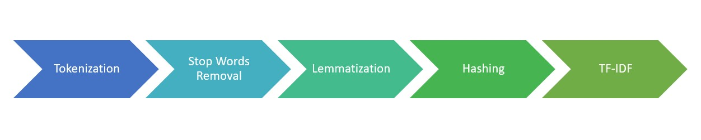

Sentiment Classification Using Machine Learning
Data Preprocessing

Headline Preprocessing
- Text was tokenized using the NLTK RegexpTokenizer.
- The NLTK English stopwords (except for negators) were removed.
- Part of Speech (POS) was tagged using NLTK.
- Text was lemmatized using the WordNetLemmatizer.
Feature Selection
- Newspaper source reduced model accuracy.
- NGrams reduced model accuracy.
- Word2Vec and Hashing + TF-IDF were compared. Hashing + TF-IDF was more accurate.
Machine Learning Models
Selected Models
- Naive Bayes
- One vs. Rest (with a Logistic Regression Classifier)
- Multilayer Perceptron Classifier
Testing/Training
- For all models, a stratified 80/20 training/testing split was used.
- All models were generated in pySpark.
- All models were evaluated using the Multiclass Classifier Evaluator in pySpark.
Libraries
- NLTK
- Vader
- RegexpTokenizer
- POS Tagger
- stopwords (English)
- WordNetLemmatizer
- numpy
- pandas
- pySpark
- HashingTF
- IDF
- Word2Vec
- NGrams
- Naive Bayes
- Logistic Regression
- One vs Rest
- Multilayer Perceptron Classifier
- Multiclass Classification Evaluator
- TextBlob
Model Accuracy
Our models were more accurate than a trained NaiveBayes TextBlob classifier while NLTK Vader performed only slightly better than our models
Future Work
- More data is needed to create a more accurate model.
- Other types of models such as deep learning models could also be trained.